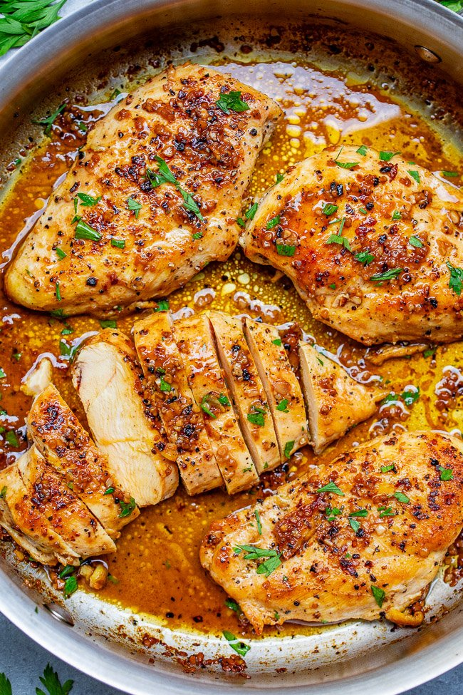

Garlic Butter Chicken

Description
Tender, juicy chicken bathed in a rich garlic butter sauce with a splash of wine for extra flavor!! This EASY stovetop chicken recipe is ready in 15 minutes and will become a family FAVORITE!!
Ingredients
-
Olive oil
-
Boneless skinless chicken breasts
-
Poultry Seasoning
-
Salt
-
Pepper
-
White wine or chicken broth
-
Butter
-
Garlic
-
Fresh Parsely
Steps
-
To a large skillet, add olive oil, chicken breasts seasoned with 21 Salute Seasoning, salt, pepper, and sear on the first side for about 5 minutes.
-
Flip chicken oven and cook on the second side for about 5 minutes.
-
When the chicken is done and cooked through, remove it from the pan and allow it to rest on a plate.
-
Deglaze your pan with a splash of wine, add the butter, garlic, and cook for one minute, or until the butter has melted and the garlic is fragrant.
-
Return the chicken to the pan, toss it in the garlic butter sauce, garnish with parsley, and serve.